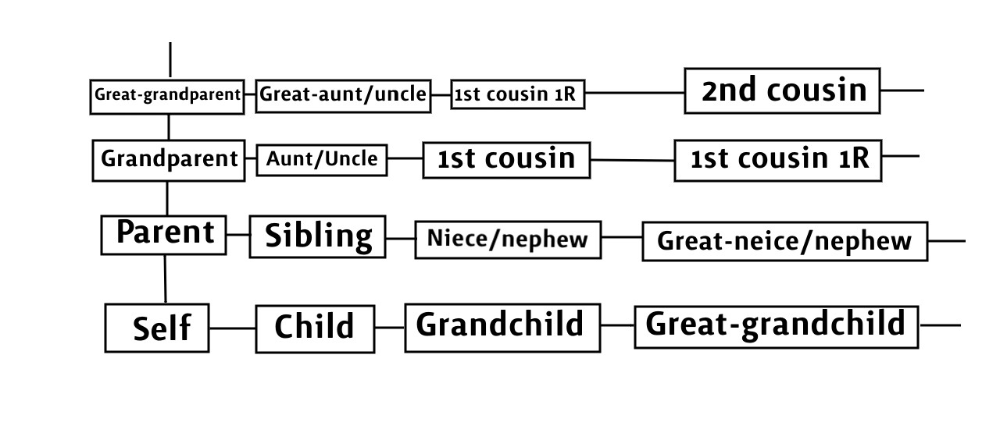

After watching Michael Stevens' video explaining the types of family relations (as they are categorized in English), I set out to represent these relations as intuitively as I could. The result was a tidy diagram that has many nice properties. Here it is:
(I'm sorry, graphic design is not my passion). "1R" stands for once removed. The grid extends indefinitely upwards and rightwards, and the lines denote the child-parent relationship, with the parent being the one above or to the left. This layout has the following properties:
There is even a calculus for composing relations, which is admittedly not as elegant as the above properties, nor unique to this representation. In fact, this way of composing relations is not very geometrical or original, but I'll include here as a relevant matter.
As an example, if we want to know what relationship one might have with one's aunt's cousin, we first see that to get from 'self' to 'cousin,' we walk up two, and then down two in the other direction. We can take this same path from 'aunt,' and arrive at 'first cousin once removed.' As another example, the great-nieces and nephews (up, down, down, down) of one's great-uncle could be one's self, siblings, or first cousins. It is important not walk up, then down on the same path.
The diagram neglects many important features of family, such as half-siblings, step-siblings, in-laws, or cases when the family tree is not strictly a tree (due to blood-related parents or time travel). I hope you find it interesting anyway!